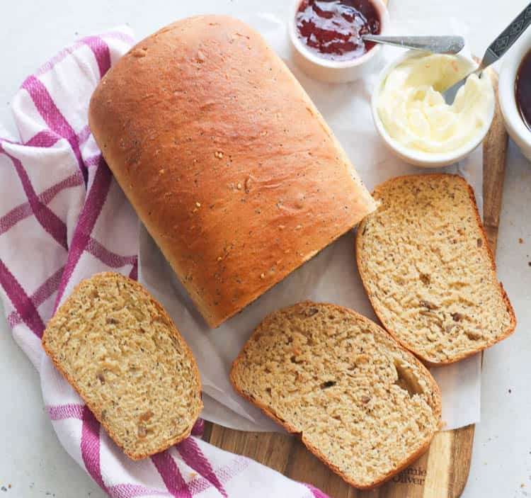

Whole Wheat Bread
Ingredients
- 3 cups whole wheat flour
- 1 1/4 cups warm water
- 2 1/4 tsp active dry yeast
- 1/4 cup honey
- 1/4 cup olive oil
- 1 tsp salt
Instructions
- Dissolve yeast in warm water and let it sit for 5 minutes.
- Mix in honey, olive oil, and salt.
- Add flour and knead until smooth.
- Let the dough rise for 1 hour.
- Shape dough into a loaf and let it rise for 30 minutes.
- Bake at 350°F (175°C) for 30 minutes.
